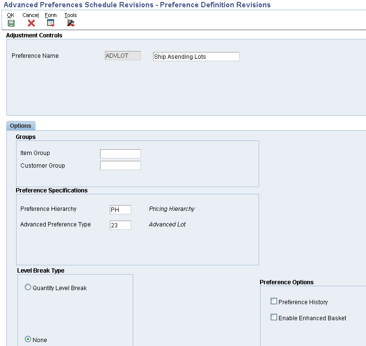
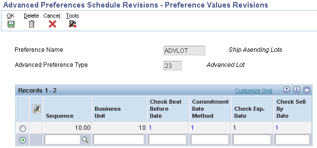
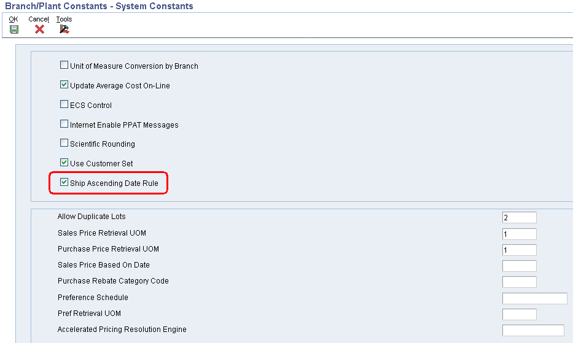
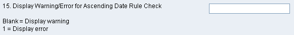
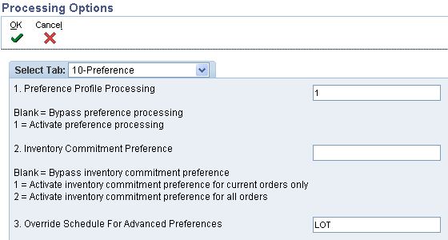

A product can now be shipped based on Lot Expiration Date, Sell By Date and/or Best Before Date greater than the last shipment. The Ascending Ship Date Rule must be setup for any combination of Customer, Customer Group, Product or Product Group. The ability to view recent shipments to a customer by Last Lot Number, Last Expiration Date, Last Sell By Date and Last Best Before Date shipped makes sure that the customer always gets product that is fresher or newer than what was previously shipped.
Details
Setup
Setup a preference name for Advanced Lot (Preference 23) in Advanced Preference Name Revisions (P4071) off menu G40311.

Attach the Preference name to the desired Preference Schedule.
Create Preference Detail to setup the Ship Ascending Rules. The first screen simply gives information about the customer, customer group, item and/or item group and effective dates.
Take the Pref Details row exit to fill in the true detail for this preference. Currently at this time the only supported commitment date methods are expiration date, sell by date, and best before date. The F4239 Last Customer Shipment table was designed to only store the last shipments lot expiration date, sell by date, and best before dates.

This will define what dates will be evaluated to make sure that the customer receives a fresher newer item than the one that was shipped to them last.
Verify that the Preference Schedule is in the System Constants or it can be attached in the Sales Order Entry (P4210) processing option. Also a new System Constant flag has been added to turn on and off the Ship Ascending processing.

A new table, Last Customer Shipment (F4239) has been created to keep track of the last/highest shipment for the Ascending Ship Date Rules.
Sales Order Entry
The Advanced Lot Preference will be resolved at time of Sales Order Entry (P4210) and the Ship Ascending Rules will be stored in the Sales Detail (F49211) table.
When manually hard committing a lot, the Ship Ascending edits will be performed comparing dates for the specified lot against the Last Customer Shipment (F4239) table. A processing option was added to:
Sales Order Entry
Pick Confirmation Override
Manual Planner
Shipment Confirmation
Processing option #15 on the Process tab behind Sales Order Entry (P4210) determines if a warning or error is returned.

The Preference processing option #1 must be set to 1 in Sales Order Entry (P4210). This will invoke the preference and will update the Sales Detail (F49211) records and update the UDBBCK, UDCMDM, UDEDCK, and/or UDSBCK fields. Also, the advanced preference schedule can either be specified in processing option #3 or in the system constants:

Print Pick Slips (R42520)
When allocating inventory, the Ascending Rule Check will be performed against each lot that inventory is committed.
There is a processing option in the Pick Slip Print (R42520) that can be set to activate the Advanced Lot Preference using the Ship Ascending Date Rule. If Process Tab Option #2 (Preference Commit) = 1 (Use Preferences to Commit) then the preference is activated.
When the preference is activated, the Pick Slip Print (R42520) will compare the Lot Quantities Available to the Sales order Quantity and will also compare the Lot Dates on the Lots with Quantities Available to the lot dates of the last lot shipped in the F4239 Last Customer Shipment table for the customer and item.
If a lot with later dates than the Last Customer Shipment lot exists with available quantities to satisfy the order, Pick Slip Print (R42520) will pick that lot and ignore any lots with earlier dates.
If the only lots containing available quantities have earlier dates than the Last Customer Shipment, Pick Slip Print (R42520) will bypass the older lot and will place the order line on backorder with last status 902 (Backordered in Commitments).
In both scenarios, Pick Slip Print (R42520) will process three error messages, "Lot Expiration Date is not in ascending order", "Sell By Date is not in ascending order", and "Best Before Date is not in ascending order". Under no circumstances will the lot with earlier lot dates be selected.
Shipment Confirmation (P4205)
Shipment Confirmation has been changed to perform the Ship Ascending Edit when relieving inventory. This will serve as a second check before inventory is shipped to the customer. Inventory must be relieved at Ship Confirm in order for the Last Customer Shipment (F4239) record to be written. Shipment Confirmation (P4205) will generate the records in the Last Customer Shipment (F4239) table as long as there is a Sales Detail (F49211) record with at least one of the following fields in the Sales Detail (F49211) updated with 1:
UDBBCK UDCMDM UDEDCK UDSBCK
Note: The Sales Detail (F49211) record was created at order entry time via Sales Order Entry (P4210).
When items are shipped from multiple Branch/Plants, only one record will be updated/written to the Last Customer Shipment (F4239) table.
Example
Inventory shows:
Lot Number
Expiration Date
123
4/20/2011
234
4/25/2011
345
4/30/2011
Last Customer Shipment (F4239) table for Customer 1 shows:
Lot Number
Expiration Date
012
4/27/2011
The lot that will be allocated for Customer 1 will be 345 with an expiration date greater than 4/27/2011.
Work with Last Customer Shipment (P4239)
The Last Customer Shipment (P4239) available through Interactive Versions will display all records in the Last Customer Shipment (F4239) table along with all dates and lot numbers that are used to execute the Ship Ascending Edits.